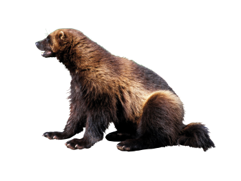
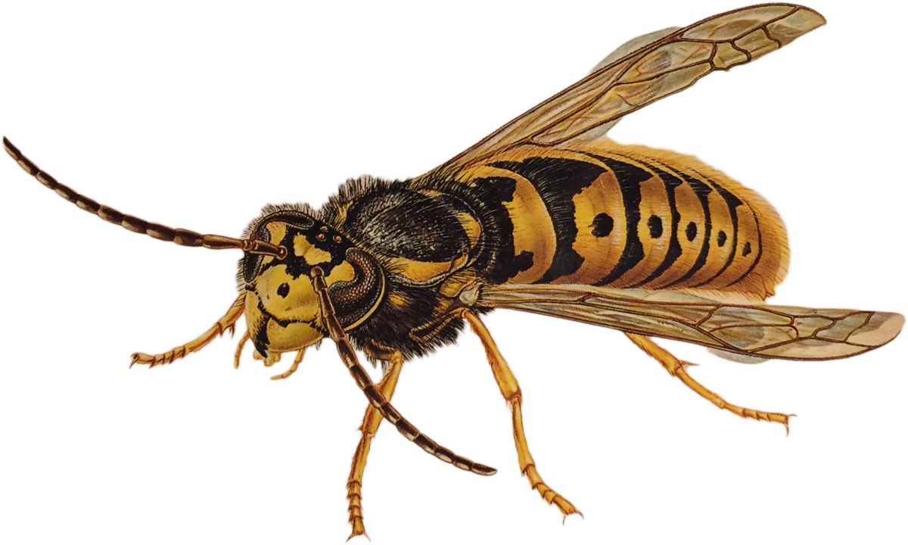
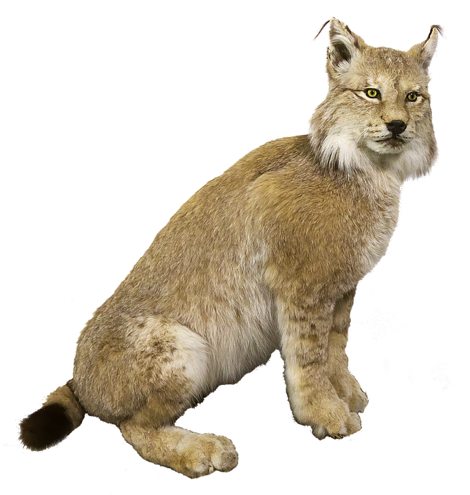
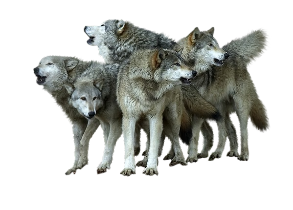

Björn
Brunbjörnen tar sig en lång tupplur under vintern och vaknar lagom tills våren tittar fram. Under vintern passar den också på att föda sina ungar. En nyfödd björnunge väger bara några hekto och är lika liten som en ekorre! Björnen är en fridsam allätare. På våren gräver björnen fram mumsiga myror. Den äter gärna en massa blåbär och andra växter. Och ibland jagar den och äter kött, till exempel älg.

Järv
Järven gillar mest sitt eget sällskap. Som en långbent grävling, med stora tassar och lång yvig svans, rör sig järven över stora områden i vår fjällkedja. De stora tassarna fungerar som smidiga snöskor när snön fryser till och det blir skare.

Geting
I skogen kan de mindre getingarna bygga sitt bo hängande från en gren i ett träd eller en buske men det vanligaste är att de gör det i en hålighet i jorden. Bålgetingen bygger däremot nästan alltid boet i ett ihåligt träd eller en stor fågelholk. Vissa insekter härmar getingar för att skrämma fåglar och andra som kan vilja äta upp dem.

Lodjur
Lodjuret är Europas största vildkatt. Lodjuret har fina tofsar på öronen och en kort stubbig svans. Den gillar att käka rådjur och är expert på att smyga, det är nästan omöjligt att få syn på denna katt!

Örn
Kungsörnen är en av de mest kända rovfåglarna. De är också en av de bästa flygarna, och kan flyga så fort som 190 km/h. Jättesnabbt! Och inte nog med det, när de dyker i luften så kan de nå hastigheter över 300 km/h!
